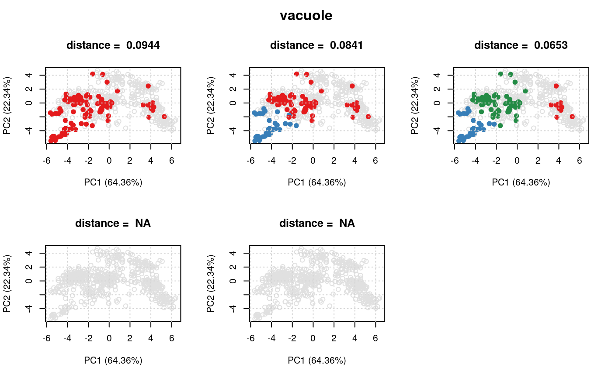

"ClustDist"ClustDist-class.RdThe ClustDist summaries algorithm information, from
running the clustDist function, such as the number
of k's tested for the kmeans, and mean and normalised
pairwise (Euclidean) distances per numer of component
clusters tested.
Object of this class are created with the clustDist
function.
k:Object of class "numeric" storing
the number of k clusters tested.
dist:Object of class "list" storing
the list of distance matrices.
term:Object of class "character" describing
GO term name.
id:Object of class "character" describing
the GO term ID.
nrow:Object of class "numeric" showing
the number of instances in the set
clustsz:Object of class "list" describing
the number of instances for each cluster for each k tested
components:Object of class "vector" storing
the class membership of each protein for each k tested.
fcol:Object of class "character" showing
the feature column name in the corresponding MSnSet
where the protein set information is stored.
Plots the kmeans clustering results.
Shows the object.
showClass("ClustDist")#> Class "ClustDist" [package "pRoloc"] #> #> Slots: #> #> Name: k dist term id nrow clustsz #> Class: numeric list character character numeric list #> #> Name: components fcol #> Class: vector characterlibrary('pRolocdata')#> #> #>data(dunkley2006) par <- setAnnotationParams(inputs = c("Arabidopsis thaliana genes", "Gene stable ID"))#>#>#> Connecting to Biomart...#>#>#>#>#> | | | 0% | |===== | 8% | |=========== | 15% | |================ | 23% | |====================== | 31% | |=========================== | 38% | |================================ | 46% | |====================================== | 54% | |=========================================== | 62% | |================================================ | 69% | |====================================================== | 77% | |=========================================================== | 85% | |================================================================= | 92% | |======================================================================| 100%## plot clusters for first 'ClustDist' object ## in the 'ClustDistList' plot(dd[[1]], xx)## plot distances for all protein sets plot(dd)